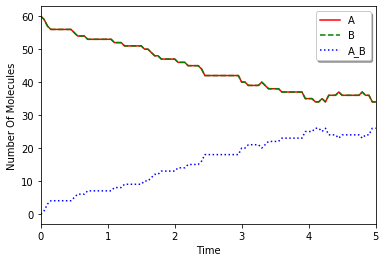

See also
This page was generated from examples/example10.ipynb.
Download the Jupyter Notebook for this section: example10.ipynb. View in nbviewer.
Simple Equilibrium¶
This is a simple equilibrium model as an example. Here, we explain how to model and run a simulation without using decorators (species_attributes and reaction_rules) and run_simulation method.
[1]:
%matplotlib inline
from ecell4.prelude import *
Choose one module from a list of methods supported on E-Cell4.
[2]:
# f = gillespie.Factory
# f = ode.Factory()
# f = spatiocyte.Factory()
# f = bd.Factory()
# f = meso.Factory()
f = egfrd.Factory()
Set up parameters:
[3]:
L, N, kd, U, D, radius = 1.0, 60, 0.1, 0.5, 1.0, 0.01
volume = L * L * L
ka = kd * volume * (1 - U) / (U * U * N)
sp1, sp2, sp3 = Species("A", radius, D), Species("B", radius, D), Species("A_B", radius, D)
rr1, rr2 = create_binding_reaction_rule(sp1, sp2, sp3, ka), create_unbinding_reaction_rule(sp3, sp1, sp2, kd)
Create a model:
[4]:
m = NetworkModel()
m.add_species_attribute(sp1)
m.add_species_attribute(sp2)
m.add_species_attribute(sp3)
m.add_reaction_rule(rr1)
m.add_reaction_rule(rr2)
Create a world and simulator:
[5]:
w = f.world(Real3(L, L, L))
w.bind_to(m)
w.add_molecules(Species("A"), N)
w.add_molecules(Species("B"), N)
sim = f.simulator(w)
sim.set_dt(1e-3) #XXX: This is too large to get the accurate result with BDSimulator.
Run a simulation:
[6]:
next_time, dt = 0.0, 0.05
data = [(w.t(), w.num_molecules(sp1), w.num_molecules(sp2), w.num_molecules(sp3))]
for i in range(100):
next_time += dt
while (sim.step(next_time)): pass
data.append((w.t(), w.num_molecules(sp1), w.num_molecules(sp2), w.num_molecules(sp3)))
Plot with Matplotlib:
[7]:
import matplotlib.pylab as plt
from numpy import array
data = array(data)
plt.plot(data.T[0], data.T[1], "r-", label=sp1.serial())
plt.plot(data.T[0], data.T[2], "g--", label=sp2.serial())
plt.plot(data.T[0], data.T[3], "b:", label=sp3.serial())
plt.xlabel("Time")
plt.ylabel("Number Of Molecules")
plt.xlim(data.T[0][0], data.T[0][-1])
plt.legend(loc="best", shadow=True)
plt.show()

See also Reversible and Reversible (Diffusion-limited) in the Tests section for more detailed comparisons between methods.